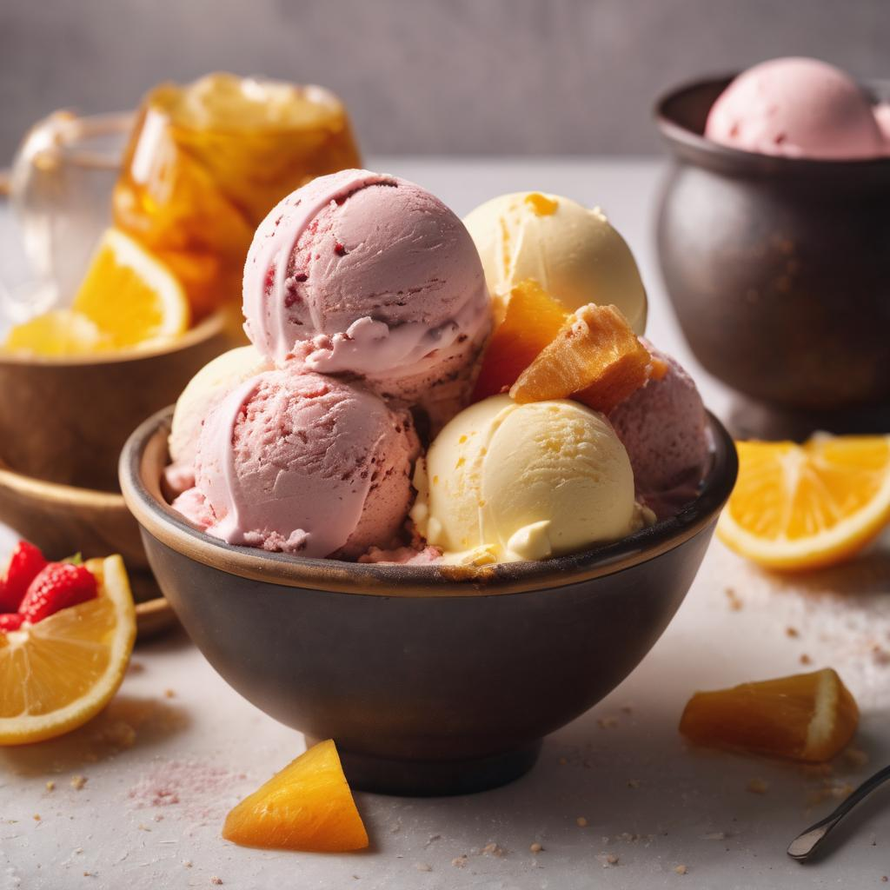

Homemade Ice cream

Homemade ice cream is a delicious treat that you can make right in your own kitchen. Unlike store-bought ice cream, which often contains lots of preservatives and artificial flavors, homemade ice cream gives you the freedom to control the ingredients and customize the flavor to your liking.
One of the best things about homemade ice cream is its creamy, rich taste. Because you are starting with fresh ingredients like heavy cream and whole milk, you can achieve the perfect texture without any gritty or icy aftertaste. Plus, you can adjust the sweetness and flavor to your liking, so if you prefer a less sweet or more deeply-flavored ice cream, you can easily make it just the way you want it.
Ingredients
- 2 cups heavy cream
- 1 cup whole milk
- 3/4 cup granulated suga
- 2 teaspoons pure vanilla extrac
- Pinch of salt
How to make it
- In a medium saucepan, combine the heavy cream, whole milk, sugar, vanilla extract, and salt.
- Heat the mixture over low heat, stirring continuously, until the sugar is completely dissolved and the mixture is warm to the touch (about 5 minutes).
- Remove the saucepan from the heat and pour the mixture into a large bowl.
- Cover the bowl with plastic wrap and refrigerate until completely chilled (about 2 hours).
- Once the mixture is chilled, pour it into an ice cream maker and churn according to the manufacturer's instructions.
- Transfer the churned ice cream to a large freezer-safe container and freeze until it is firm enough to scoop (about 2 hours).
- Serve the ice cream with your favorite toppings and enjoy!